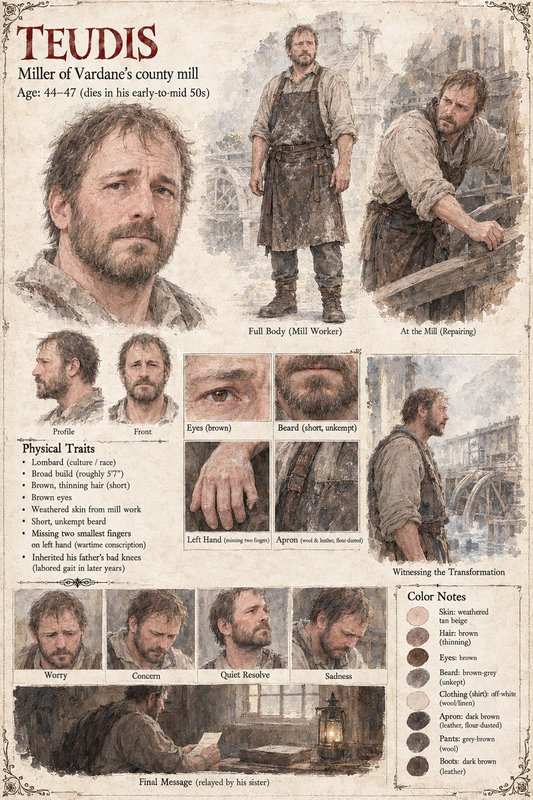

Teudis
Miller of Vardane's county mill · inherited the post, and his father's bad knees
The broad, uncomplaining miller of Vardane's county mill, who inherited the position along with his father's bad knees and had kept, for years before the clockmaker ever arrived, a private tally of exactly how many days each winter the wheel turned at all — a number he never once told Count Garibald, suspecting correctly that the Count already knew it better than he did. He holds the precision bearing himself before Observer 419 installs it, cold in his palm on a night beside a working forge, and it's his own tavern telling of that visit, embellished the way an unbelievable truth requires, that eventually gives the county its name for what changed the mill: the Third Grain.
Conscripted in the war his own good fortune helps start, he comes home eleven months later missing the two smallest fingers of his left hand and goes straight back to the mill anyway. He dies two winters before the Count returns, having made his sister repeat back to him three times the one fact he considered worth reporting.
“Tell him the mill never once stopped running. Not for a single day. Hand or no hand.”
Appears in The Third Grain